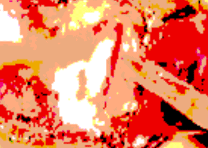

KHJ.EXE
KHJ.EXE website link
The intention behind the original project (the book) was to recreate an abstracted vertical slice of my existence into a container to be examined in the future. This website is an extension of the 2017 publication titled "KHJ.EXE." It was created to digitize and preserve the spirit of the book on the web. Compiled in this website is an abstracted vertical slice of my existence, as of Nov. 4th, 2020, split up into nine components. Explore each of the compartments to find a 3d model, short explanation, and the original pdf pages of the book.


